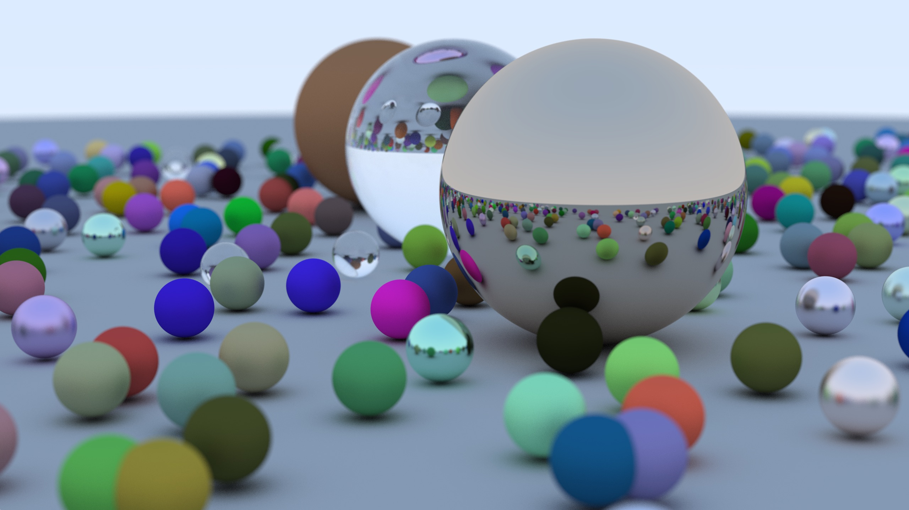

CS 89/189: Multi-modalities Generative AI, Fall 2024Instructor: Yu-Wing Tai [Course Page] |
|
CS 89/189: Multi-modalities Generative AI, Spring 2024Instructor: Yu-Wing Tai [Course Page] 5-minute student presentation: NLP: [AutoCoT][ReAct][AlphaGeometry]Vision: [Segment Anything Model][CodeFormer][AnimateDiff][An Image is Worth One Word][Human Action Synthesis] Audio: [Whisper] Architecture/PEFT: [QLoRA][Mamba, Mamba (cont'd)] |
|
|  |
CS 77/277: Computer Graphics, Winter 2024Instructor: Yu-Wing Tai [Course Page] [Youtube] |